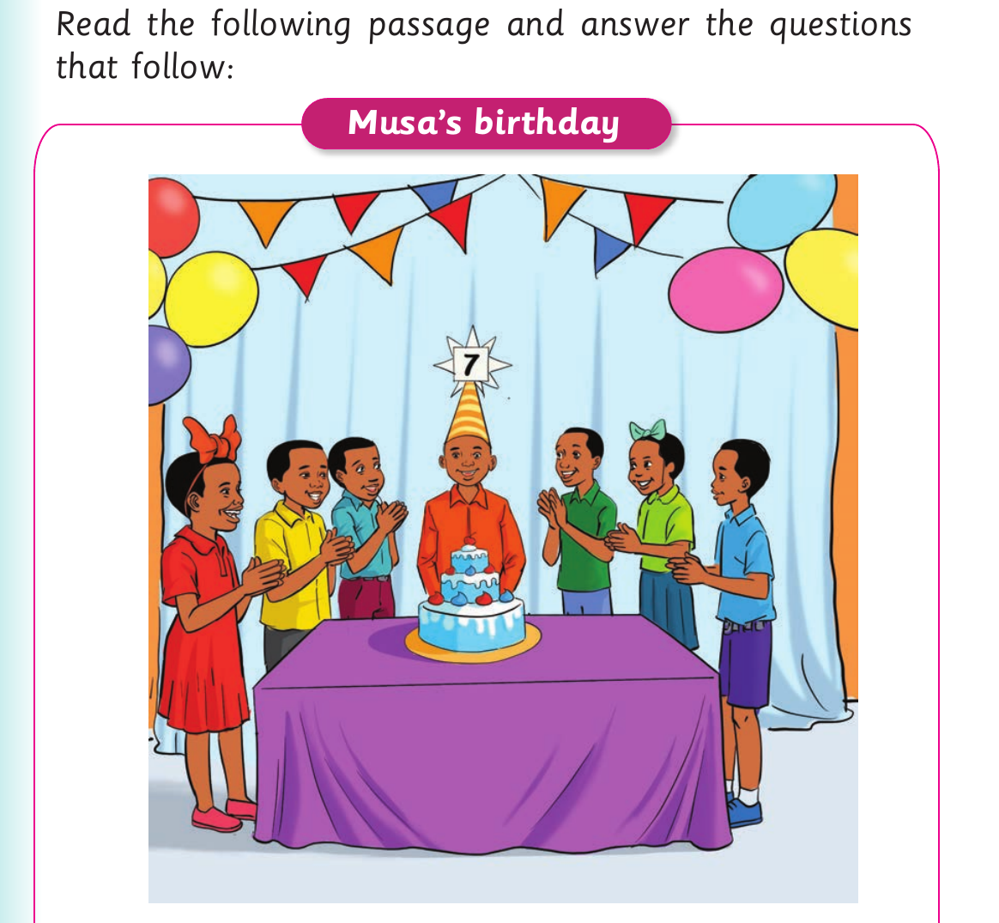

Musa's birthday
Activity 2

Read the following passage and answer the questions that follow: Musa’s birthday
My name is Musa. I am seven years old now. My birthday was on the 13 th of January. My mother came to my room and woke me up. She hugged me and said, “Happy birthday, my son.” The day was enjoyable and memorable. In the evening, my mother invited our neighbours and friends. We ate delicious food and cake. We also drank fresh fruit juice. My friends and I sang and danced cheerfully.